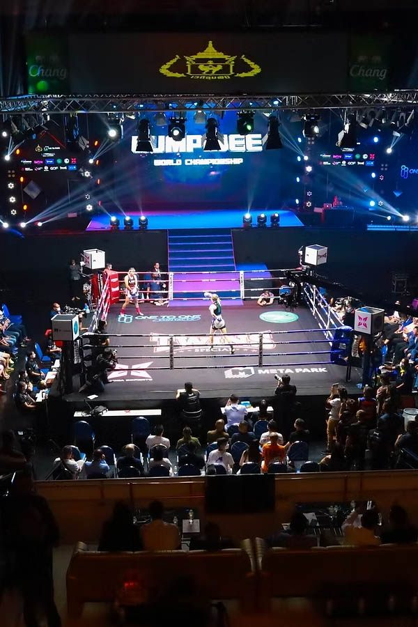
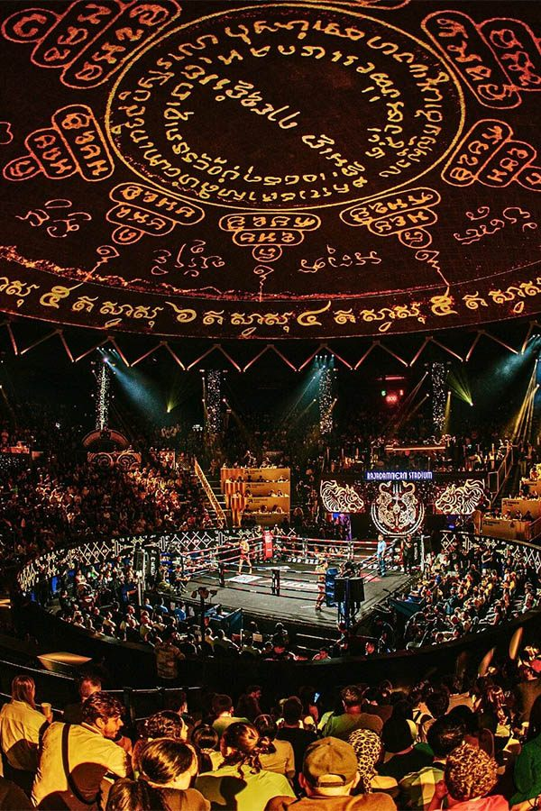

Muay Thai is Thailand's national sport and cultural treasure, known as "The Art of Eight Limbs" for its use of fists, elbows, knees, and shins. Bangkok offers the world's most authentic Muay Thai experience at legendary stadiums where champions are crowned and traditions continue.
Watching live Muay Thai in Bangkok provides incredible cultural insight into Thai traditions, featuring ceremonial dances, traditional music, and the spiritual aspects of this ancient martial art. The atmosphere is electric with passionate local crowds and international visitors experiencing Thailand's fighting heritage.
Royal Ivory Hotel guests enjoy easy access to both major stadiums via BTS and taxi, making it simple to experience this quintessential Thai cultural experience during your Bangkok stay.
New Lumpinee Stadium (relocated 2014) is considered the most prestigious Muay Thai venue in the world. Fights here feature the highest level of competition with top-ranked fighters and championship bouts that determine Thailand's Muay Thai rankings.
| Stadium Info | Fight Schedule | Ticket Prices | Transportation |
|---|---|---|---|
| 🏟️ Lumpinee Stadium | Tuesday, Friday, Saturday 18:30-23:00 | 1,000-2,500 Baht | Taxi 30 min from hotel |
| 🥊 Rajadamnern Stadium | Monday, Wednesday, Thursday, Sunday 18:30-22:30 | 1,500-3,000 Baht | BTS + taxi 25 min total |

Rajadamnern Stadium is Bangkok's oldest boxing stadium (opened 1945), located in the historic Dusit district. This venue offers a more traditional atmosphere with classic stadium architecture and deep boxing history.
Our hotel concierge can arrange tickets and transportation to both stadiums. Book 2-3 days in advance for weekend fights. VIP seats offer better views and air conditioning. Stadium food and drinks available inside.
Best seats for first-time visitors: 2nd class tickets provide good views at reasonable prices (1,500-2,000 Baht).
A Muay Thai fight night is a complete cultural experience combining sport, music, ceremony, and community. Understanding the traditions enhances your appreciation of this ancient martial art.
Muay Thai fights consist of 5 rounds of 3 minutes each with 2-minute rest periods. Fighters can use fists, elbows, knees, and kicks. The scoring emphasizes technique, power, and ring control rather than just aggression.
Muay Thai represents much more than fighting - it's a cultural practice deeply rooted in Thai history, Buddhism, and national identity. Understanding these cultural elements enriches the viewing experience significantly.
Muay Thai evolved from ancient battlefield techniques used by Thai warriors. The art was formalized during the reign of King Naresuan (1590-1605) and became a national sport during the 20th century. Each technique has historical significance in Thai military history.
For many Thai fighters, Muay Thai provides economic opportunity and social mobility. Rural fighters often support entire families through prize money and sponsorship. The sport maintains strong connections to Thai rural communities and traditional values.
Address: Ram Inthra Road, Bangkok (New location since 2014)
Address: Ratchadamnoen Nok Road, Bangkok (Historic location)
🚕 Transportation Tips:
Book return taxi before fights end to avoid long waits. Royal Ivory concierge can arrange round-trip transportation. Allow extra time for traffic, especially on weekends. Stadium parking available but taxi is more convenient.
| Day | Lumpinee Stadium | Rajadamnern Stadium | Best For |
|---|---|---|---|
| Monday | No fights | 18:30-22:30 | Traditional atmosphere |
| Tuesday | 18:30-23:00 | No fights | Championship fights |
| Wednesday | No fights | 18:30-22:30 | Mid-week action |
| Thursday | No fights | 18:30-22:30 | Local favorites |
| Friday | 18:30-23:00 | No fights | Weekend warm-up |
| Saturday | 18:30-23:00 | No fights | Premier fights |
| Sunday | No fights | 18:30-22:30 | Weekend finale |
🥊 First-Time Visitor Tips:
Arrive early to experience the full atmosphere buildup. Don't be surprised by the betting activity - it's part of the culture. The music gets louder during exciting moments. Fights can end suddenly with knockouts or technical decisions. Enjoy the authentic Thai cultural experience!